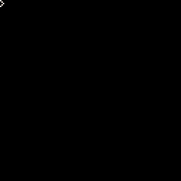

If you have ever had to suffer through an internet dropout, chances are you will have seen this page on Google Chrome.
What you might not know is that pressing the spacebar starts up a little jumping game!

Pressing the spacebar makes the Dino jump so that it can avoid the pesky cacti that get in its way.
This first lesson will show how you can re-create this game in the Pico-8 Engine!
You can load this game up by copying the p8 file into your ‘Carts’ folder, then typing ‘load offlinedino’ into the pico-8 Console


----- details about the environment
environment = {}
-- world gravity
environment.gravity = -9.83
-- low bounds of the world
environment.floor = 50
-- variable to hold text for debugging purposes
environment.debug = "a"
-- workarond for amount of time the system is running
environment.time = 0
-- run the main game loop
environment.playing = true
----- spawn stuph
environment.spawn = {}
environment.spawn.obstacles = {}
environment.spawn.timesincelastspawn = 0
The environment here is used to manage globally available stuff. Constants, gametime, debugging information. Having this all available in one place makes it much easier to make changes later.
-- our hero, mr 'saur
dinosaur = {}
-- unlikely to change, but useful for collision detection
dinosaur.x = 50
-- current standing point
dinosaur.y = environment.floor
-- highest mr 'saur can jump
dinosaur.maxjump = 20
-- in the process of jumping
dinosaur.jumping = false
-- current velocity of 'saur's jump
dinosaur.jumpspeed = 0
-- amount of time in-air
dinosaur.timejumping = 0
-- mr saurs movement sprite
dinosaur.sprite = 0
Each of these properties will be used to control our player.
-- bounding box collision detection
dinosaur.collide = function()
local _str = ""
--[[
{xl,yl}______
| |
|_____|
{xr, yr}
]]--
local saur = {
xl = dinosaur.x + 1, yl = dinosaur.y,
xr = dinosaur.x + 7, yr = dinosaur.y + 8
}
_str = _str .. "saur: \r\n"
for k, v in pairs(saur) do
_str = _str .. "{ key: " .. k .. ", value: " .. v .. "}\r\n"
end
-- _time = birthtime of the obstacles
-- __obstacle = obstacle, that can hit the player
for _time, __obstacle in pairs(environment.spawn.obstacles) do
local _obs = {
xl = __obstacle.x + 1, yl = __obstacle.y + 2,
xr = __obstacle.x + 7, yr = __obstacle.y + 8
}
_str = _str .. "\r\n obs: \r\n"
for k, v in pairs(_obs) do
_str = _str .. "{ key: " .. k .. ", value: " .. v .. "}\r\n"
end
if
(
( _obs.xl <= saur.xr and _obs.xr >= saur.xr ) and
( _obs.yl <= saur.yr and _obs.yr >= saur.yr )
)
then
return true
end
end
--environment.debug = _str
return false
end
dinosaur.die = function()
dinosaur.sprite = 3
end
The big thing here is what is called Bounding Box Collision. It’s a simple physics technique that lets the game know if two boxes intersect (one is somewhat inside the other). If any of the obstacles (cacti here) collide with 'saur, then it’s 'Game Over Man’! Also, the ‘_str’ dotted about the place is a way to see what is currently happening in the game. As shown here, the debugging information can show where 'saur is, where obstacles are, and when the obstacles spawn and despawn. A gif image showing the game debugging obstacles spawning and despawning The last bit shows the sprite of 'saur when it’s game over. More on sprites later!
-- handle all movement of mr. 'saur
function moveplayer()
-- flip 'saurs sprite, to give the impression of running
dinosaur.sprite += 1
if dinosaur.sprite > 2 then
dinosaur.sprite = 0
end
-- math library can't be used, so just compare against the highest known 'saur sprite
-- time in air, used for v = u + at of 'saurs jump
dinosaur.timejumping += .5
-- if 'saur is jumping, update its height
if dinosaur.jumping == true then
-- v = u + at
dinosaur.jumpspeed = dinosaur.maxjump + ( environment.gravity * dinosaur.timejumping )
dinosaur.y -= dinosaur.jumpspeed
end
-- check if the next frame will bring 'saur beneath the floor. it can walk out the door, get on the floor, but it cannot be under the floor
if dinosaur.y - dinosaur.jumpspeed > 80 then
-- set the state to be a non-jumper
dinosaur.jumping = false
-- make sure 'saur is in the right place
dinosaur.y = environment.floor
end
-- has mr. 'saur hit an obstacle
if dinosaur.collide() then
environment.playing = false
end
end
-- initiate a 'saur jump(tm)
function jump()
dinosaur.jumping = true
dinosaur.timejumping = 0
end
Moving the obstacles
-- handle movement of the obstacles
function moveobstacles()
-- _time = birthtime of the obstacles
-- __obstacle = obstacle, that can hit the player
for _time, __obstacle in pairs(environment.spawn.obstacles) do
__obstacle.x -= 5
-- memory management, remove any obstacles that are offscreen
if __obstacle.x <= -50 then
environment.spawn.obstacles[_time] = nil
end
end
end
The finally, the obstacle (de)spawn logic
-- test to see if an obstacle can/ should spawn
function canspawn()
-- attempt to pass the obstacle spawner
if environment.spawn.timesincelastspawn <= 0 then
-- set a timeout for the next chance to attempt a spawn check
environment.spawn.timesincelastspawn = flr((rnd(10)*0.1) * 50)
-- randomise the possibility of an obstacl spawn
return (rnd(10)*0.1) > 0.5
end
environment.spawn.timesincelastspawn -= 1
return false
end
function spawn()
local spawntime = environment.time
local obstacle = {
birthtime = spawntime,
sprite = 4,
x = rnd(100) + 100,
y = 50
}
environment.spawn.obstacles[obstacle.birthtime] = obstacle
end
----- main methods
function _update()
if environment.playing then
-- time moves on
environment.time += 1
-- update the obstacles positions/ status
moveobstacles()
-- update the players position/ status
moveplayer()
if btn(1) then
if dinosaur.jumping == false then
--environment.debug = "jump"
jump()
end
end
-- try to spawn an obstacle
if canspawn() then
-- spawn an obstacle
spawn()
end
else
-- you just hit an obstacle, you moose
dinosaur.die()
end
end
function _draw()
cls()
-- sky
rectfill( -10, -10, 400, 400, 1)
-- mr 'saur
spr (dinosaur.sprite, dinosaur.x, dinosaur.y)
-- obstacles
for _time, _obstacle in pairs(environment.spawn.obstacles) do
spr(_obstacle.sprite, _obstacle.x, _obstacle.y)
end
-- ground
rectfill (-10, environment.floor + 10, 400, 400, 10)
print (environment.debug, 0, 0, 14)
-- game has ended, display the score
if environment.playing == false then
print ("game over! \r\nyour score: " .. environment.time, 40, 65, 8)
else
print ("score: " .. environment.time, 80 - #(environment.time .. ""), 0, 2)
end
end

Here you fill in blocks of 8X8 pixels to make Sprites.
The Logic we had written earlier will use Sprites 0 - 2 for 'saurs movement, Sprite 3 for 'saurs gameover pose. and 4 for the obstacles.

Now that we have this all up and running, we can give the game a whirl!

If you’ve made it this far, Conglaturations! A winner is you!
Y’know what to do next? Have a poke through this code. Change the Sprites. Who knows? Maybe a chicken may want to spend a game jumping over cars!
{kind=link}